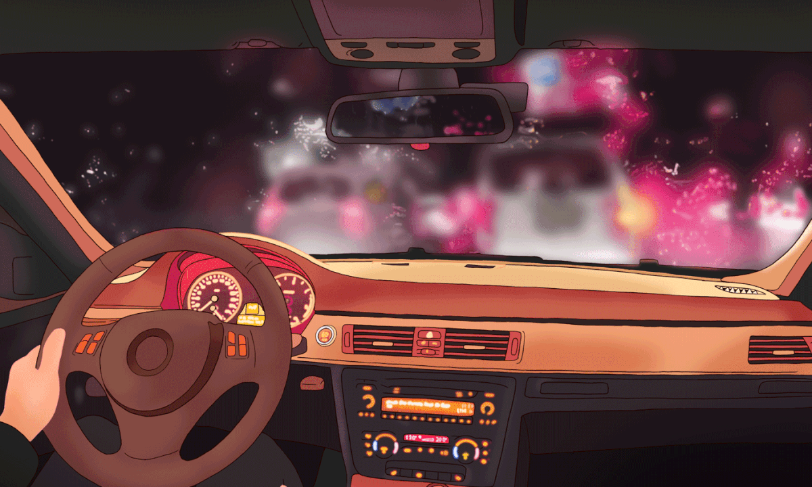

My Hobbies



Welcome to my portfolio website, a showcase of my innovative and creative work. From stunning visuals to cutting-edge concepts, discover the unique perspective and skillset I bring to the table. Have fun exploring my personal website!
Laboratory Activity 3A 3rd Year BS - Information Technology in MSU - IIT. Technology has always fascinated me, and I have a strong desire to learn and innovate in this field. I am highly motivated and detail-oriented, which has helped me excel in my coursework so far. I am always on the lookout for new technologies and trends in the industry and am eager to apply my knowledge to real-world problems. Overall, I am passionate about technology and am excited about the opportunities that lie ahead in my career.
Read MoreWelcome to my portfolio showcasing my work and skills for Web Developing. Browse my writing, spanning various topics and styles, and learn about my training, capabilities, and expertise. Whether you're a potential client or simply curious, I hope you find this informative and engaging. Thanks for visiting!
Go To PortfolioI created this website as our final project on our first year subject about web development, It is not the best website, but I am still a beginner during this time, it talks about the advocacy of Climate Change. How and What we can do to prevent the changing of our world. This website is not the best out there, but it makes me proud.
Go To WebsiteThis is our first prototype website, to comply for our final project on requirements engineering we made this website, Me, Sam, Chu and Rex made a proposal about a website that resembles an SMB Marketplace. It is not a fully functional website, but some buttons work and are connected to different pages.
Go To Website